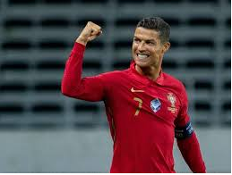

reposicion
atras
quien es cristiano ronaldo.
cristiano ronaldo es un famoso y grandioso futbolistas, un futbolista portugués que juega como delantero en la Juventus F. C. de la Serie A de Italia y en la selección de Portugal, de la cual es su capitán.
